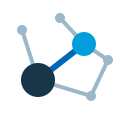

PROFESSOR MAKER
01 / MONOGRAM
나란히, PM
Side by side
교수와 학생이 나란히 서 있는 두 글자. 단정한 선과 작은 파란 점은 연구실에서 시작되는 서로의 성장을 표현한다. 포털 상단과 모바일 아이콘에 어울리는 기본 시안.
SVG 내려받기 · DownloadLAB IDENTITY / DESIGN STUDIES
조용한 교수와 한 명의 학생을 위한 연구실 로고 시안.
푸른색의 학사 포털 분위기와 게임의 이야기를 독자적인 형태로 담았다.
Side by side
교수와 학생이 나란히 서 있는 두 글자. 단정한 선과 작은 파란 점은 연구실에서 시작되는 서로의 성장을 표현한다. 포털 상단과 모바일 아이콘에 어울리는 기본 시안.
SVG 내려받기 · DownloadA letter, years later
학위가 끝난 뒤 책상에 도착하는 한 통의 편지. 열린 봉투와 아직 남은 파란 점으로 이야기의 여운을 담았다. 엔딩 기록, 동문 소식과 편지 화면에 어울리는 시안.
SVG 내려받기 · Download
PROFESSOR MAKEROne connection
여러 아이디어 사이에서 한 사람과 맺는 선명한 연결. 서로 다른 크기의 두 점과 열린 네트워크로 사제 관계와 STEM 연구를 표현했다. 프로젝트와 학술활동 화면에 어울리는 시안.
SVG 내려받기 · Download